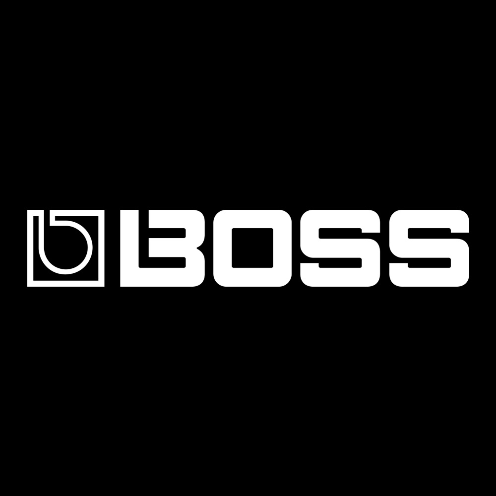
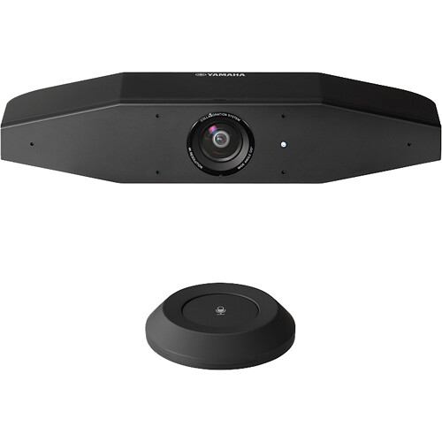

- 

June 15, 2023. Shizuoka, Japan. –Yamaha will show a number of new products and updates at InfoComm 2023, which is being held in Orlando, US from June 14-16. These include the new DM7 series digital mixing consoles, the flagship DME7 signal processors with redeveloped ProVisionaire suite of system design, control and management software, and their new video collaboration systems “CS-800“ and “CS-500”.
InfoComm 2023 is taking place at the Orange County Convention Center in Orlando, Florida, with Yamaha exhibiting at adjacent booths 4671 and 4773.
Yamaha is also showing the CS-800 video sound bar at InfoComm, which has been newly certified for Microsoft Teams and the CS-500 video collaboration system. The all-in-one CS-800 integrates a beam forming hexa-microphone, 4k camera, 90 dB SPL (at one metre) embedded loudspeaker and HDMI video output for remote conferencing into one device, providing a seamless and simple conferencing experience. The CS-500 includes the microphone, camera and video output (HDMI), while utilizing the speaker of the connected display (or other Yamaha or third-party speakers).
By combining Yamaha's proprietary audio processing with the latest intelligent video technology to track the voices of participants, the CS-800 and the CS-500 automatically adjust video and audio for each unique setting, taking video collaboration to a new era of flexibility and intelligibility
The company will be showing a number of new products in the US for the first time. These will include the DM7 series of professional digital mixers, which takes the best elements of previous digital mixing systems and combine them with innovative new features in a compact, powerful, ergonomic, flexible and expandable package.
The Yamaha DM7-EX and DM7-EX Compact systems comprise the core DM7 or DM7 Compact mixers, combined with the DM7 Control unit.
Designed to deliver exceptional results with enhanced workflow for live music, corporate events, theatre, broadcast, streaming and hybrid mixing - where one console is used to independently mix more than one feed - the DM7 series allows for the ultimate in control flexibility is required, the DM7 (or DM7 Compact) and DM7 Control able to be separated and used in different locations, while all part of the same mixing system.